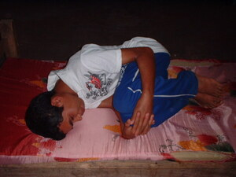

hibat 
/hibat/
Var.1: ibat
v_rt.
“lie_down”
vi.
for someone (eggibat/eg-ibat, miggibat/mig-ibat/inggibat/in-ibat, agent, eg><ø-) to lie down somewhere (eggibatan/eg-ibatan, inggibatan/in-ibatan/miggibatan/mig-ibatan, location, eg><an-)
Wrd.Gloss: lie_down
Kayi a pad eggibat te baley niyu.
I will lie down here in your house.
Spec. ley-ang
Spec. kilid
Spec. langkeb
Eng. lie down; lay down; recline
Tag. humigâ
Ceb. higdà
Ilo.: agídda
OCM: Sleeping (513), Postures (516)
Online dict status: -
Usage level: B
vi.
for someone (egpeyibat, migpeyibat/impeyibat, agent, eg><ø-pA-) to lie down on one's back (egpeyibaten, impeyibat/migpeyibat/pigpeyibat, egpA><en-)
Eng. lie on one's back
Online dict status: -
Usage level: R
v.
for someone (egpekeyibat, nekeyibat, agent, egpAkA-) to be forced to the ground when fighting
Egpekeyibat e kangkuwa si Ana.
Ana will be forced to the ground later.
Eng. forced to ground; frail
DDP: Weak (2.4.2)
Online dict status: -
Usage level: R
vi.
for someone (eggibat-hibat/eg-ibat-ibat, miggibat-hibat/mig-ibat-ibat/inggibat-hibat/in-ibat-ibat, eg><ø-rdpRT-) to rest
Cult. e.g. in the rainy season
Eggibat-hibat e pad su masakit amana ka ulu ku.
I will take rest because my head is painful.
Syn. eggimimeley
Eng. rest; laze
DDP: Rest (2.4.5)
Online dict status: -
Usage level: R
n.
(hibatanan/ibatanan, -an-an) bed or sleeping mat (lit. lying place)
Eng. bed; bedding; sleeping mat
Online dict status: -
Usage level: M
Updated by: RJH,AAA,RJH,QDL,RJH
Last updated: 29/Jul/2014
"pekeyibat" in text "The Barrio Fiesta (Egsahakeen) and Castration"
"peyibat" in healthbook "Nabekeg si Junjun teg keenen"
This page last updated: 03-Jan-2020
Copyright © 2009-2014, Matigsalug Language Christian Association, Inc